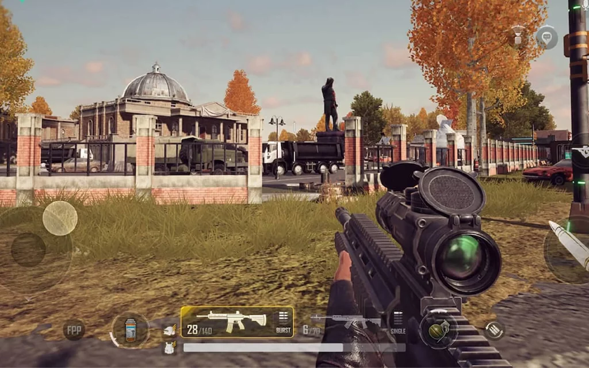

Pioneiro dos jogos battle royale, Playerunknown’s Battlegrounds nasceu em 2016. Assim como Fortnite, o objetivo do jogo é ser o último personagem ou time sobrevivente do mapa. Como dissemos, battle royale é como o filme Jogos Vorazes. Até o PUBG, não havia um título desse gênero. Como a saga de Katniss Everdeen terminou em 2015, o lançamento de um jogo nesse formato um ano depois teve um enorme impacto inicial. Em 2017, o game registrou incríveis 3,2 milhões de jogadores simultâneos, conforme números da Steam. Mas, ao longo do tempo, com o lançamento de tantos outros jogos battle royale e falta de inovação, PUBG hoje registra 500 mil players ao mesmo tempo, em média.
